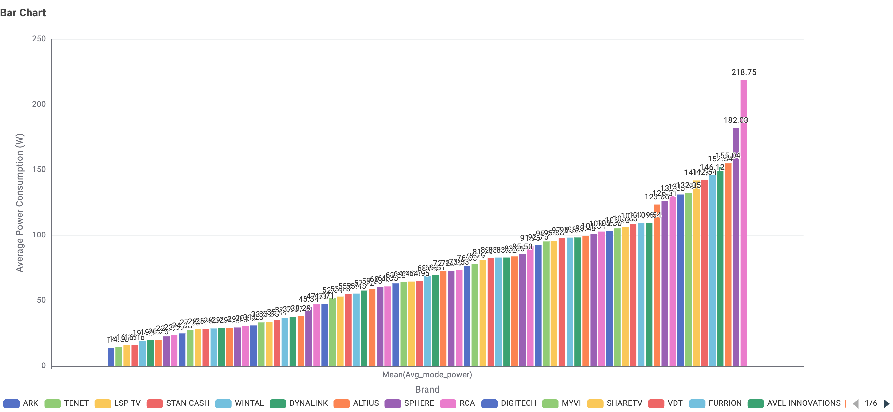

Television Energy Usage
Exploring the power consumption of one of Australia's most common household entertainment devices.
1. What type of TV screen technologies are currently available in Australia and which are the most frequent?


2. What screen sizes are currently available, and which are the most frequent?

The 65-inch and 55-inch models are by far the most dominant, tying for the top spot with over 760 available models each.
3. Which brands have the greatest number of different models?

Kogan currently has the greatest number of different models available on the market, offering 806 distinct models. It is followed by LG with 723 models.
(Note: If the "SAMSUNG" and "SAMSUNG ELECTRONICS" registrations were combined under a single corporate umbrella, Samsung would be the overall leader with 1,200 unique available models.)
4. Which type of screen technology consumes the least amount of power?

LCD screen technology consumes the least amount of power.
5. What is the relationship between screen size and power use?

As screens get larger, the variance in power consumption widens dramatically. While small TVs have a very narrow power range, massive differences in energy efficiency exist among larger TVs of the exact same size (e.g., 114-inch models range anywhere from 280 W to 600 W).
6. What is the relationship between star rating and screen size?

There is no significant relationship between a television's screen size and its Star Rating Index. Televisions of the exact same size can have vastly different energy efficiency ratings.
[Optional] Are there differences in power consumption between brands?

There are massive differences in average power consumption between brands.